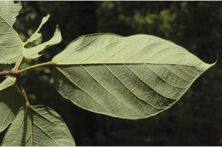
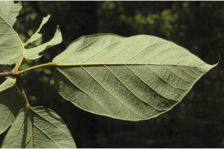

Deciduous trees, up to 20 m tall.
20 ಮೀ ಎತ್ತರದವರೆಗಿನ ಎಲೆಯುದುರು ಮಾದರಿಯ ಮರಗಳು.
Deciduous trees, up to 20 m tall.
இலையுதிர் மரம், 20 மீ. உயரம் வரை வளரக்கூடியது.
Bark greyish-brown, flaky when mature; blaze pink.
ತೊಗಟೆ ಬೂದು ಮಿಶ್ರಿತ -ಕಂದು ಬಣ್ಣ ಹೊಂದಿದ್ದು,ಬಲಿತಾಗ ಚಕ್ಕೆಯೇಳುವ ಮಾದರಿಯವುಗಳಾಗಿರುತ್ತದೆ;ಕಚ್ಚು ಮಾಡಿದ ಜಾಗ ನಸುಗೆಂಪು.
Bark greyish-brown, flaky when mature; blaze pink.
மரத்தின் பட்டை சாம்பல்-ப்ரவுன் நிறமானது, முதிரும் போது பெரிய செதில்களாக உதிருபவை; உள்பட்டை பிங்க் நிறமானது.
Young branchlets, terete, stellate and tawny tomentose.
ಎಳೆಯ ಕಿರುಕೊಂಬೆಗಳು ದುಂಡಾಗಿರುತ್ತವೆ, ನಕ್ಷತ್ರರೂಪದ ರೋಮಗಳಿಂದ ಮತ್ತು ಕಂದು ಮಿಶ್ರಿತ ಹಳದಿಬಣ್ಣದ ಮೃದು ತುಪ್ಪಳದಿಂದ ಕೂಡಿರುತ್ತವೆ.
Young branchlets, terete, stellate and tawny tomentose.
சிறிய நுனிக்கிளைகள், குறுக்குவெட்டுத் தோற்றத்தில் வளையமானது, மஞ்சள்-ப்ரவுன் நிற உரோமங்களுடையது மற்றும் நட்சத்திர வடிவ உரோமங்களுடையது.
Leaves simple, alternate, spiral, clustered at twig ends; stipules ensiform, caducous and leaving scar; petiole 2-5 cm long, terete, stellate tawny tomentose, swollen at both ends; lamina 8-24 x 6.5-14 cm, elliptic-oblong to broadly elliptic or ovate, apex shortly acuminate, base rounded to cordate, margin entire, glabrous above, stellately tawny pubescent beneath; midrib canaliculate above; 3-5-nerved at base; secondary_nerves 6-8 pairs; tertiary_nerves obliquely reticulo-percurrent.
ಎಲೆಗಳು ಸರಳವಾಗಿದ್ದು ಪರ್ಯಾಯ ಮತ್ತು ಸುತ್ತು ಜೋಡನಾ ವ್ಯವಸ್ಥೆಯಲ್ಲಿದ್ದು ಕುಡಿಕೊಂಬೆಗಳ ತುದಿಯಲ್ಲಿ ಗುಂಪಾಗಿರುತ್ತವೆ;ಕಾವಿನೆಲೆಗಳು ಕತ್ತಿಯ ಆಕಾರ ಹೊಂದಿದ್ದು, ಉದುರಿದ ನಂತರ ಗುರುತು ಉಳಿಸುವ ಮಾದರಿಯವುಗಳಾಗಿರುತ್ತವೆ; ತೊಟ್ಟುಗಳು 2-5 ಸೆಂ.ಮೀ. ಉದ್ದವಿದ್ದು, ದುಂಡಾಗಿರುತ್ತವೆ, ನಕ್ಷತ್ರ ರೂಪದ, ಕಂದು ಮಿಶ್ರಿತ ಹಳದಿಬಣ್ಣದ ದಟ್ಟ ಮೃದು ತುಪ್ಪಳದಿಂದ ಕೂಡಿರುತ್ತವೆ,ಎರಡೂ ತುದಿಯಲ್ಲಿ ಉಬ್ಬಿಕೊಂಡಿರುತ್ತವೆ; ಪತ್ರಗಳು 8–24 X 6.5 – 14 ಸೆಂ.ಮೀ. ಗಾತ್ರ,ಅಂಡವೃತ್ತ-ಚತುರಸ್ರದಿಂದ ವಿಶಾಲವಾದ ಅಂಡವೃತ್ತ ಅಥವಾ ಅಂಡದವರೆಗಿನ ಆಕಾರ ಹೊಂದಿದ್ದು, ಕಿರಿ ಗಾತ್ರದ ಕ್ರಮೇಣ ಚೂಪಾಗುವ ತುದಿ, ದುಂಡಾದುದರಿಂದ ಹೃದಯದ ಆಕಾರವರೆಗಿನ ಮಾದರಿಯ ಬುಡ, ನಯವಾದ ಅಂಚು ಹೊಂದಿರುತ್ತವೆ,ಪತ್ರದ ಮೇಲ್ಭಾಗ ರೋಮರಹಿತವಾಗಿದ್ದು ತಳಭಾಗ ಕಂದು ಮಿಶ್ರಿತ ಹಳದಿ ಬಣ್ಣದ ನಕ್ಷತ್ರ ರೂಪದ ರೋಮಗಳಿಂದ ಆವೃತವಾಗಿರುತ್ತವೆ; ಮಧ್ಯನಾಳ ಪತ್ರದ ಮೇಲ್ಭಾಗದಲ್ಲಿ ಕಾಲುವೆಗೆರೆ ಸಮೇತವಿರುತ್ತದೆ;ಬುಡದಲ್ಲಿ3 - 5 ನಾಳಗಳ ಸಮೇತವಿರುತ್ತವೆ;ಎರಡನೇ ದರ್ಜೆಯ ನಾಳಗಳು 6 - 8 ಜೋಡಿಗಳಿರುತ್ತವೆ; ಮೂರನೇ ದರ್ಜೆಯ ನಾಳಗಳು ಜಾಲಬಂಧ ನಾಳ ವಿನ್ಯಾಸದಲ್ಲಿದ್ದು ಓರೆಯಾಗಿ ಎಲೆಯ ದಿಂಡಿಗೆ ಅಡ್ಡವಾಗಿ ಕೂಡುತ್ತವೆ.
Leaves simple, alternate, spiral, clustered at twig ends; stipules ensiform, caducous and leaving scar; petiole 2-5 cm long, terete, stellate tawny tomentose, swollen at both ends; lamina 8-24 x 6.5-14 cm, elliptic-oblong to broadly elliptic or ovate, apex shortly acuminate, base rounded to cordate, margin entire, glabrous above, stellately tawny pubescent beneath; midrib canaliculate above; 3-5-nerved at base; secondary_nerves 6-8 pairs; tertiary_nerves obliquely reticulo-percurrent.
இலைகள் தனித்தவை, மாற்றுஅடுக்கமானவை, சுழல் போன்று அமைந்தவை, சிறுகிளைகளின் நுனியில் இலைகள் கூட்டமாக மற்றும் நெருக்கமாக காணப்படும்; இலையடிச்செதில் வால் போன்றது, எளிதில் உதிரக்கூடியது மற்றும் தழும்புகளை ஏற்படுத்துகின்றன; இலைக்காம்பு 2-5 செ.மீ. நீளமானது, குறுக்குவெட்டுத் தோற்றத்தில் வளையமானது, மஞ்சள்-ப்ரவுன் நிற நட்சத்திர வடிவ உரோமங்களுடையது, காம்பின் இருமுனைகளும் உப்பியது; இலை அலகு 8-24 X 6.5-14 செ.மீ., நீள்வட்டம்-நீள்சதுர வடிவானது முதல் அகன்ற நீள்வட்ட வடிவானது அல்லது முட்டை வடிவானது, அலகின் நுனி குட்டையான அதிக்கூரியது, அலகின் தளம் வட்டமானது முதல் இதய வடிவானது, அலகின் விளிம்பு முழுமையானது, அலகின் மேற்பரப்பு உரோமங்களற்றது, அலகின் கீழ்பரப்பு நட்சத்திர வடிவ மஞ்சள்-ப்ரவுன் நிற உரோமங்களுடையது; மையநரம்பு மேற்புறத்தில் அலகின் பரப்பைவிட பள்ளமானது; தளத்திலே 3 நரம்புகளை உடையது; இரண்டாம் நிலை நரம்புகள் 6-8 ஜோடிகள்; மூன்றாம் நிலை நரம்புகள் தளம் நோக்கிய வலைப்பின்னல்-பெர்க்கரண்ட் போன்றவை.
Inflorescence terminal or axillary racemes, densely stellately tawny pubescent; flowers polygamous, white with pink dots; pedicel 0.3 cm long.
ಪುಷ್ಪಮಂಜರಿಗಳು ತುದಿಯಲ್ಲಿನ ಅಥವಾ ಅಕ್ಷಾಕಂಕುಳಿನಲ್ಲಿನ ಮಧ್ಯಾಭಿಸರ ಮಾದರಿಯಲ್ಲಿದ್ದು ಕಂದು ಮಿಶ್ರಿತ ಹಳದಿ ಬಣ್ಣದ ನಕ್ಷತ್ರ ರೂಪದ ರೋಮಗಳಿಂದ ಆವೃತವಾಗಿರುತ್ತವೆ;ಹೂಗಳು ಸಂಕೀರ್ಣಲಿಂಗಿಗಳಾಗಿದ್ದು ನಸುಗೆಂಪು ಚುಕ್ಕೆಗಳಿಂದ ಕೂಡಿದ ಬಿಳಿ ಬಣ್ಣದಲ್ಲಿರುತ್ತವೆ ;ಹೂತೊಟ್ಟುಗಳು 0.3 ಸೆಂ.ಮೀ.ಉದ್ದವಿರುತ್ತವೆ.
Inflorescence terminal or axillary racemes, densely stellately tawny pubescent; flowers polygamous, white with pink dots; pedicel 0.3 cm long.
மஞ்சரி தண்டின் நுனியில் அல்லது இலைக்கோணங்களில் காணப்படுபவை, ரெசீம் வகை, அடர்த்தியாக மஞ்சள்-ப்ரவுன் நிற நட்சத்திர வடிவ உரோமங்களுடையது; மலர்கள் பாலிகேமஸ், வெள்ளை நிறமானது மற்றும் பிங்க் நிறமான புள்ளிகளுடையது; மலர்காம்பு 0.3 செ.மீ. நீளமானது.
Follicles of 1-5, woody, obovoid, 7.6 cm long, bright-red or scarlet, stellately villous, pink or scarlet within; seeds many, ovoid, black.
ಸೋತ ಫಲಗಳು 1-5, ಇದ್ದು ದಾರುವಿನ ರೀತಿಯಲ್ಲಿದ್ದು,ಬುಗುರಿ ಆಕಾರದಲ್ಲಿರುತ್ತವೆ,7.6 ಸೆಂ.ಮೀ. ಉದ್ದವಿದ್ದು ಹೊಳಪುಳ್ಳ ಕೆಂಪು ಅಥವಾ ಕಡುಗೆಂಪು ಬಣ್ಣ ಹೊಂದಿರುತ್ತವೆ ಮತ್ತು ಉದ್ದವಾದ ಮೃದುಗೂದಲುಗಳಿಂದ ಕೂಡಿರುತ್ತವೆ, ಫಲಗಳ ಒಳಭಾಗ ನಸುಗೆಂಪು ಅಥವಾ ಕಡುಗೆಂಪು ಬಣ್ಣ ಹೊಂದಿರುತ್ತದೆ; ಬೀಜಗಳು ಹಲವಾರು ಇದ್ದು,ಅಂಡದ ಆಕಾರದಲ್ಲಿದ್ದು ಕಪ್ಪು ಬಣ್ಣ ಹೊಂದಿರುತ್ತವೆ.
Follicles of 1-5, woody, obovoid, 7.6 cm long, bright-red or scarlet, stellately villous, pink or scarlet within; seeds many, ovoid, black.
பாலிக்கிள் 1-5, தடித்தவை, தலைகீழ் முட்டை வடிவானது, 7.6 செ.மீ. நீளமானது, சிவப்பு நிறமானது, நட்சத்திர வடிவ மஞ்சள்-ப்ரவுன் நிறமான உரோமங்களுடையது, உட்புறம் பிங்க் நிறமானது அல்லது சிவப்பு நிறமானது; விதைகள் எண்ணற்றது, முட்டை வடிவானது, கருப்பு நிறமானது.


 
